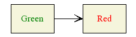
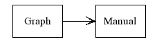
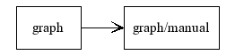

If you haven't already done so, please read the chapter about attribute syntax first.
This chapter describes all the possible attributes for graphs, groups, nodes and edges.
It is generated automatically from the definitions in Graph::Easy::Attributes.
Please note that for compatibility reasons, as well for making it easier to remember attribute names, the following attribute names are also accepted:
- arrow-shape, arrow-style
- border-color, border-style, border-width
- font-size
- label-color, label-pos
- text-style, text-wrap
- point-style, point-shape
Graphs
- align, autolabel, autolink, autotitle,
- background, border, bordercolor, borderstyle, borderwidth,
- class, color, colorscheme, comment,
- fill, flow, font, fontsize, format,
- gid,
- id,
- label, labelpos, link, linkbase,
- output,
- root,
- textstyle, textwrap, title, type,
Nodes
- align, autolabel, autolink, autotitle,
- background, basename, border, bordercolor, borderstyle, borderwidth,
- class, color, colorscheme, columns, comment,
- fill, flow, font, fontsize, format,
- group,
- id,
- label, link, linkbase,
- offset, origin,
- pointshape, pointstyle,
- rank, rotate, rows,
- shape, size,
- textstyle, textwrap, title,
Edges
- align, arrowshape, arrowstyle, autojoin, autolabel, autolink, autosplit, autotitle,
- background,
- class, color, colorscheme, comment,
- end,
- fill, flow, font, fontsize, format,
- id,
- label, labelcolor, link, linkbase,
- minlen,
- start, style,
- textstyle, textwrap, title,
Groups
- align, autolabel, autolink, autotitle,
- background, border, bordercolor, borderstyle, borderwidth,
- class, color, colorscheme, comment,
- edgeclass,
- fill, flow, font, fontsize, format,
- group,
- id,
- label, labelpos, link, linkbase,
- nodeclass,
- rank, root,
- textstyle, textwrap, title,
Class names
Each of the primary classes node, edge and group
can have an arbitrary number of sub-classes. Objects can then have one of
these subclasses set via the attribute class.
The primary class graph
cannot have subclasses, and there is only one graph object and it is always
in the class graph.
Class names case-insensitive, and must start with a letter ([a-z]), which can
be followed by any of the following: letters a-z, digits 0-9 or the underscore
_. Each subclass can have its own set of attributes.
Objects with their class-attributes set will use the attributes from the appropriate
subclass.
If an attribute was not defined there, they will inherit the attribute from their primary
class. In the following example the left node will have green text, the right one
will have red text. Both nodes will have a beige interieur:
node { color: green; fill: beige; }
node.cities { color: red; }
[ Green ] --> [ Red ] { class: cities; }

Note: It is not yet possible to have one object belong to more than one subclass.
Class selectors
If you want to specify attributes for all objects (nodes, edges and groups) of a specific subclass, you can use a class selector by leaving of the primary class name, just like you would do in CSS:
node { class: red }
edge { class: red }
.red { color: red; }
( Red:
[ Red 1 ] -- red --> [ Red 2 ]
)
This example is equivalent to:
node { class: red }
edge { class: red }
node.red { color: red; }
edge.red { color: red; }
( Red:
[ Red 1 ] -- red --> [ Red 2 ]
)
Class selector lists
It is also possible to list class names and class selectors in a list:
node, edge, .red { class: red; color: red; }
( Red:
[ Red 1 ] -- red --> [ Red 2 ]
)
Labels, Titles and Names
The label is the text displayed for the node, edge etc. It can be different from the name of the object.
Edges do not have a name, but they can have a label. If you try to access the name
of an edge, for instance via the autotitle: name; attribute, than the
optional edge label will be used instead.
Apart from setting a label manually via the
Links are constructed from two parts, by concatenating the
Note that
Of course you can also attach a link to an edge, group or graph label.
label: Foo; attribute, you can
also set labels for entire classes, or use the autolabel: attribute. The
latter has the advantage that it can shorten the label automaticall to sane values.
See this graph for an example.
linkbase attribute and
the link attribute:
node { linkbase: http://bloodgate.com/perl/; }
[ Graph ] { link: graph/; }
--> [ Manual ] { link: graph/manual/; }

linkbase is ignored unless you also have link or autolink.
You can use autolink to automatically set the link attribute to the
name, label, or titel of the object:
node { linkbase: http://bloodgate.com/perl/; autolink: name; }
[ graph ] --> [ graph/manual ]

link has precedence over autolink, the latter
will not override a link attribute on the object itself.
Also, linkbase is only prepended for relativ links, e.g. ones that do not
start with /[a-z]{3,4}://. In the following example the first node
will not have the name autolinked, and the second node will ignore the linkbase:
node { linkbase: http://bloodgate.com/perl/; autolink: name; }
[ graph ] { link: index.html; }
--> [ graph/manual ] { link: http://bloodgate.com; }

Ranks
The rank of a node or group determines the order in which nodes/groups are placed by the layouter, as well as their position relatively to each other.
When set to auto, which is also the default, the rank will be determined automatically
prior to generating the layout. Starting with the root node, or nodes with no incoming edge,
nodes will get increasing ranks until all nodes have a rank set.
When setting the rank to same for all nodes in list, these nodes will all get the same,
automatically determined (random) rank. These nodes will also be put into an anonymous
collection so that they are laid out in the same row (or column, depending on graph flow).
Color Names and Values
Please see the page about colorschemes and color names.